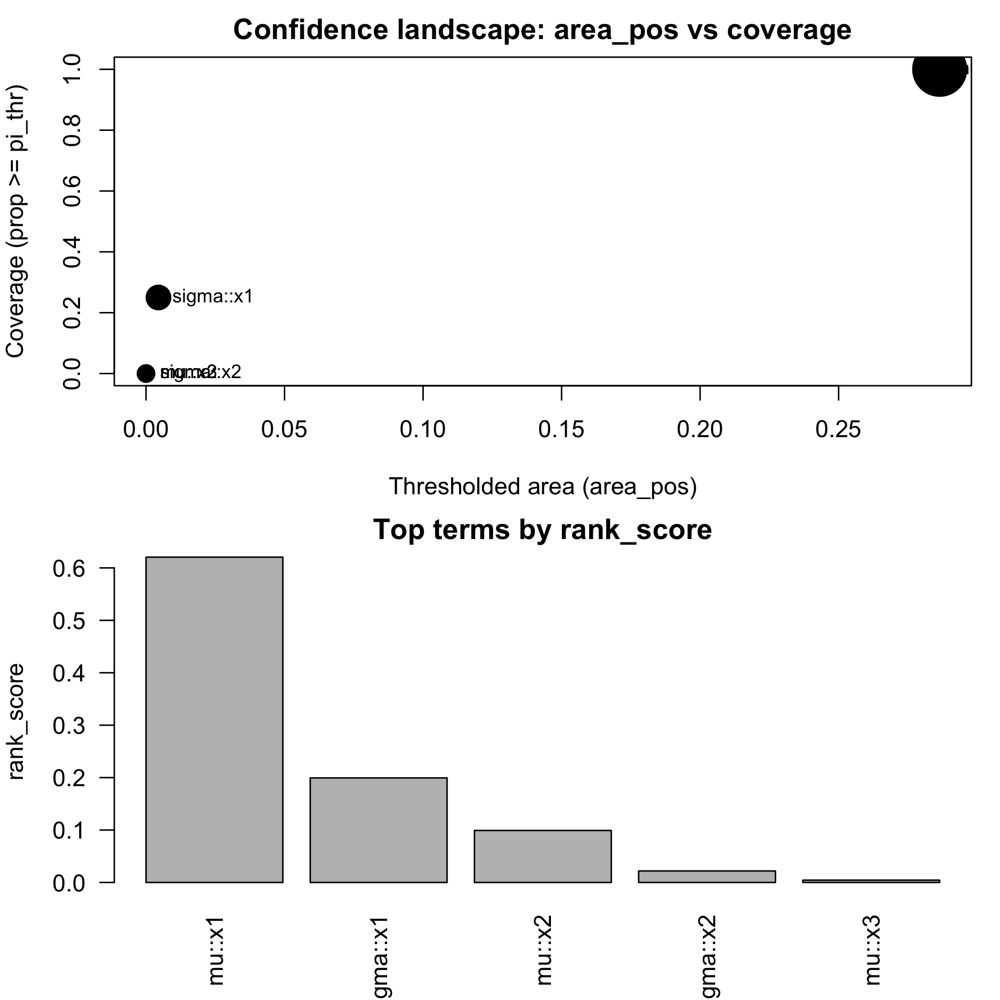
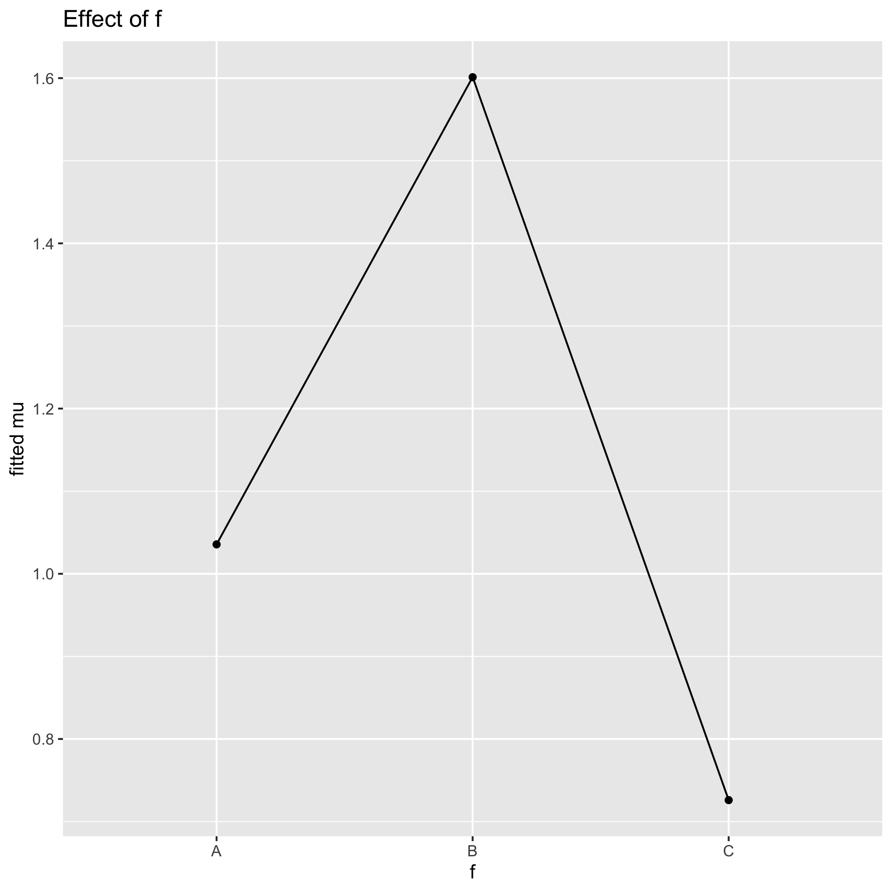
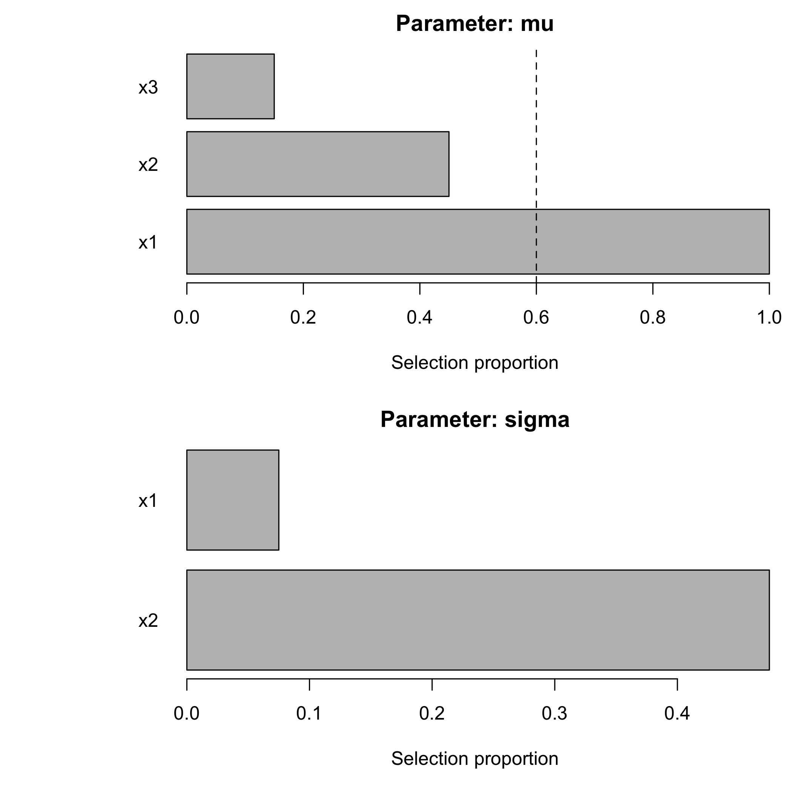
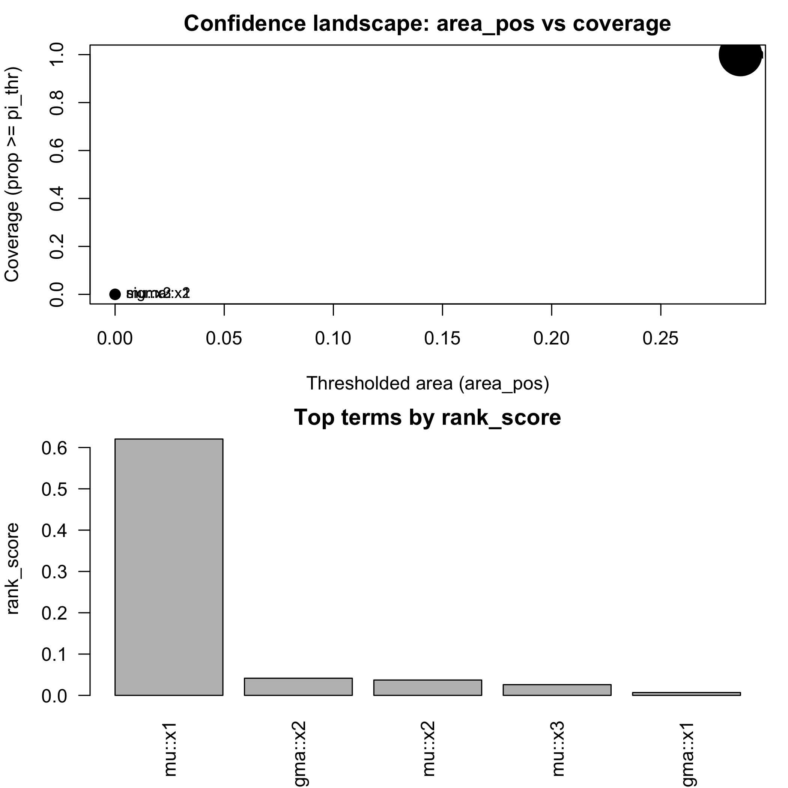
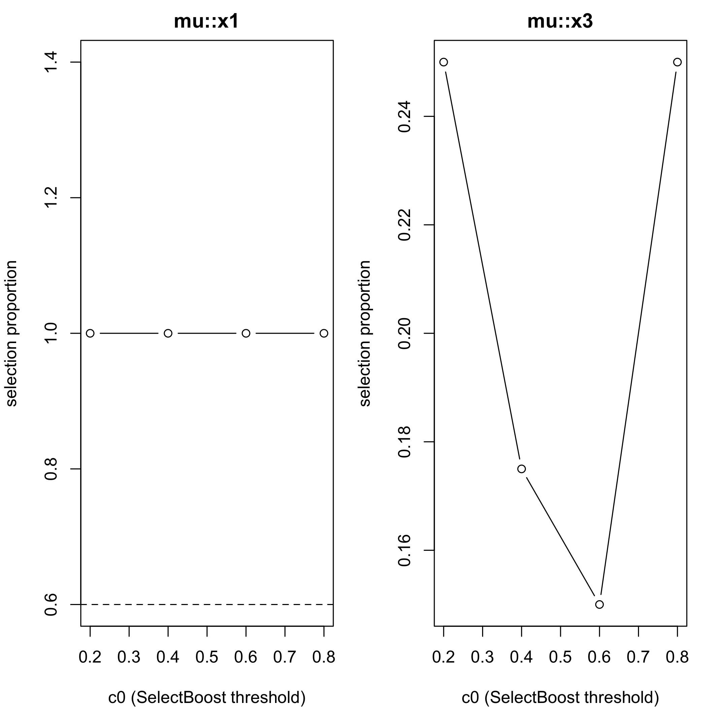

SelectBoost.gamlss delivers correlation-aware, bootstrap-based stability-selection for Generalized Additive Models for Location, Scale and Shape (GAMLSS) and quantile regression. It extends the SelectBoost algorithm so that you can work with multiple distributional parameters, mix-and-match sparse penalties, and interrogate the resulting models with rich visual summaries.
Conference highlight. SelectBoost for GAMLSS and quantile regression was presented at the Joint Statistics Meetings 2024 (Portland, OR) in the talk “An Improvement for Variable Selection for Generalized Additive Models for Location, Shape and Scale and Quantile Regression” (F. Bertrand & M. Maumy). Correlation-aware resampling markedly improves recall and precision in high-dimensional, highly correlated settings.
Why SelectBoost.gamlss?
- Stable variable selection under correlation. Group correlated predictors and sample one representative per bootstrap (c0 groups) to avoid selecting redundant surrogates.
- Distribution-aware engines. Optimise μ, σ, ν, and τ formulas simultaneously with stepwise GAIC, glmnet penalties, grouped penalties, or sparse-group penalties.
- Actionable summaries. Inspect stability tables, effect plots, correlation-aware confidence functionals, and deviance benchmarks in one workflow.
-
Fast + scalable. Rcpp-backed preprocessing, optional
future.applyparallelism, and deviance shortcuts keep large bootstrap campaigns practical.
Capabilities at a glance
| Capability | Key helpers | What you get |
|---|---|---|
| Stability selection with SelectBoost |
sb_gamlss(), selection_table(), plot_sb_gamlss()
|
Confidence-style inclusion probabilities for each parameter. |
| Automated c0 search |
sb_gamlss_c0_grid(), autoboost_gamlss(), fastboost_gamlss()
|
Grid, automatic, and lightweight bootstrap strategies. |
| Flexible engines |
engine, engine_sigma, engine_nu, engine_tau, glmnet_alpha, grpreg_penalty, sgl_alpha
|
Mix lasso/ridge, grouped penalties, or sparse-group penalties per parameter. |
| Model interpretation |
effect_plot(), plot_stability_curves(), confidence_functionals()
|
Visualise partial effects and correlation-aware confidence summaries. |
| Metric-driven tuning |
tune_sb_gamlss(), fast_vs_generic_ll()
|
Compare engines via stability or fast deviance cross-validation. |
| Knockoff-style filters |
knockoff_filter_mu(), knockoff_filter_param()
|
Approximate FDR control for μ, σ, ν, or τ working responses. |
| Performance tooling |
parallel = "auto", check_fast_vs_generic()
|
Parallel bootstraps and accuracy checks for deviance shortcuts. |
Each capability below is paired with runnable code. Copy the snippets into an R session to reproduce the behaviour showcased in the vignettes.
Installation
You can install the released version of SelectBoost.gamlss from CRAN with:
install.packages("SelectBoost.gamlss")You can install the development version of SelectBoost.gamlss from github with:
devtools::install_github("fbertran/SelectBoost.gamlss")Quick start
set.seed(1)
n <- 400
x1 <- rnorm(n); x2 <- rnorm(n); x3 <- rnorm(n)
f <- factor(sample(c("A","B","C"), n, replace = TRUE))
mu <- 1 + 1.5*x1 + ifelse(f == "B", 0.6, ifelse(f == "C", -0.4, 0))
y <- gamlss.dist::rNO(n, mu = mu, sigma = 1)
dat <- data.frame(y, x1, x2, x3, f)
res <- sb_gamlss(
y ~ 1,
mu_scope = ~ x1 + x2 + x3 + f,
sigma_scope = ~ x1 + x2 + f,
family = gamlss.dist::NO(),
data = dat,
B = 50,
sample_fraction = 0.7,
pi_thr = 0.6,
k = 2, # AIC
pre_standardize = TRUE,
trace = FALSE
)
res$final_formula
#> $mu
#> y ~ x1 + f
#>
#> $sigma
#> ~1
#> <environment: 0x32caed4f0>
#>
#> $nu
#> ~1
#> <environment: 0x32caed4f0>
#>
#> $tau
#> ~1
#> <environment: 0x32caed4f0>
sel <- selection_table(res)
sel <- sel[order(sel$parameter, -sel$prop), , drop = FALSE]
head(sel, n = min(8L, nrow(sel)))
#> parameter term count prop
#> 1 mu x1 50 1.00
#> 4 mu f 47 0.94
#> 3 mu x3 15 0.30
#> 2 mu x2 11 0.22
#> 6 sigma x2 11 0.22
#> 5 sigma x1 3 0.06
#> 7 sigma f 3 0.06
stable <- sel[sel$prop >= res$pi_thr, , drop = FALSE]
if (nrow(stable)) stable else cat("No terms passed the stability threshold of", res$pi_thr, "in this run.")
#> parameter term count prop
#> 1 mu x1 50 1.00
#> 4 mu f 47 0.94
plot_sb_gamlss(res)
plot of chunk unnamed-chunk-6
if (requireNamespace("ggplot2", quietly = TRUE)) {
print(effect_plot(res, "x1", dat, what = "mu"))
print(effect_plot(res, "f", dat, what = "mu"))
}
plot of chunk unnamed-chunk-6

plot of chunk unnamed-chunk-6
-
selection_table()ranks the most stable terms per parameter. -
plot_sb_gamlss()compares inclusion probability and (re)fit magnitude. -
effect_plot()offers quick diagnostics for both numeric and factor predictors.
Feature tour with examples
Four-parameter families
Handle multi-parameter distributions such as Box-Cox t (BCT) or Box-Cox Power Exponential (BCPE) by supplying dedicated scopes per parameter.
set.seed(2)
n_bct <- 300
z1 <- rnorm(n_bct)
z2 <- -.5+runif(n_bct)
eta_mu <- 0.2 + 0.4*z1
mu_bct <- exp(eta_mu) # > 0
sigma_bct <- exp(-0.4 + 0.6*z2) # > 0
nu_bct <- -0.2 + 0.5*z1 # real-valued OK
tau_bct <- exp(0.3 + 0.4*z2) # > 0
y_bct <- gamlss.dist::rBCT(n_bct, mu = mu_bct, sigma = sigma_bct, nu = nu_bct, tau = tau_bct)
dat_bct <- data.frame(y_bct, z1, z2)
fit_bct <- suppressWarnings(sb_gamlss(
y_bct ~ 1,
mu_scope = ~ z1 + z2,
sigma_scope = ~ z1 + z2,
nu_scope = ~ z1,
tau_scope = ~ z2,
family = gamlss.dist::BCT(),
data = dat_bct,
B = 35,
sample_fraction = 0.65,
pi_thr = 0.55,
trace = FALSE
))
#> Model with term mu_scope__z2 has failed
#> Model with term mu_scope__z1 has failed
#> Model with term mu_scope__z1 has failed
#> Model with term mu_scope__z1 has failed
#> Model with term mu_scope__z1 has failed
#> Model with term mu_scope__z1 has failed
#> Model with term mu_scope__z1 has failed
#> Model with term mu_scope__z1 has failed
#> Model with term mu_scope__z1 has failed
#> Model with term mu_scope__z1 has failed
#> Model with term mu_scope__z1 has failed
#> Model with term mu_scope__z1 has failed
#> Model with term mu_scope__z1 has failed
#> Model with term mu_scope__z1 has failed
#> Model with term mu_scope__z1 has failed
#> Model with term mu_scope__z2 has failed
#> Model with term mu_scope__z1 has failed
#> Model with term mu_scope__z1 has failed
fit_bct$final_formula
#> $mu
#> y_bct ~ z1
#>
#> $sigma
#> ~z1
#> <environment: 0x333759918>
#>
#> $nu
#> ~z1
#> <environment: 0x333759918>
#>
#> $tau
#> ~1
#> <environment: 0x333759918>
selection_table(fit_bct)[selection_table(fit_bct)$prop >= fit_bct$pi_thr, ]
#> parameter term count prop
#> 1 mu z1 20 0.5714286
#> 3 sigma z1 25 0.7142857
#> 5 nu z1 35 1.0000000Automated c0 search and confidence summaries
Explore the SelectBoost grouping parameter (c0) via grids, automatic selection, and lightweight previews.
grid over c0 and plot
g <- sb_gamlss_c0_grid(
y ~ 1,
data = dat,
family = gamlss.dist::NO(),
mu_scope = ~ x1 + x2 + x3,
sigma_scope = ~ x1 + x2,
c0_grid = seq(0.2, 0.8, by = 0.2),
B = 40,
pi_thr = 0.6,
pre_standardize = TRUE,
trace = FALSE,
progress = TRUE
)
#> | | | 0% | |======================= | 25% | |============================================== | 50% | |===================================================================== | 75% | |============================================================================================| 100%
plot(g)
plot of chunk unnamed-chunk-8
confidence_table(g)
#> parameter term conf_index cover
#> 1 mu x1 0.4 1
#> 2 sigma x1 0.0 0
#> 3 mu x2 0.0 0
#> 4 sigma x2 0.0 0
#> 5 mu x3 0.0 0autoboost: pick best c0 automatically
ab <- autoboost_gamlss(
y ~ 1,
data = dat,
family = gamlss.dist::NO(),
mu_scope = ~ x1 + x2 + x3,
sigma_scope = ~ x1 + x2,
c0_grid = seq(0.2, 0.8, by = 0.2),
B = 40,
pi_thr = 0.6,
pre_standardize = TRUE,
trace = FALSE
)
#> | | | 0% | |======================= | 25% | |============================================== | 50% | |===================================================================== | 75% | |============================================================================================| 100%
attr(ab, "chosen_c0")
#> [1] 0.2
head(attr(ab, "confidence_table"))
#> parameter term conf_index cover
#> 1 mu x1 0.4 1
#> 2 sigma x1 0.0 0
#> 3 mu x2 0.0 0
#> 4 sigma x2 0.0 0
#> 5 mu x3 0.0 0
plot_sb_gamlss(ab)
plot of chunk unnamed-chunk-9
fastboost: lightweight stability selection
fb <- fastboost_gamlss(
y ~ 1,
data = dat,
family = gamlss.dist::NO(),
mu_scope = ~ x1 + x2 + x3,
sigma_scope = ~ x1 + x2,
B = 30,
sample_fraction = 0.6,
pi_thr = 0.6,
pre_standardize = TRUE,
trace = FALSE
)
plot_sb_gamlss(fb)
plot of chunk unnamed-chunk-10
Use progress = TRUE on grid/autoboost helpers to monitor c0 sweeps, and pair fastboost_gamlss() with smaller B/sample_fraction for rapid diagnostics.
Confidence functionals + plots
g <- sb_gamlss_c0_grid(...)
cf <- confidence_functionals(g, pi_thr = 0.6, weight_fun = function(c0) (1 - c0)^2,
conservative = TRUE, B = 30)
plot(cf) # scatter (area_pos vs cover) + top-N bars
plot_stability_curves(g, terms = c("x1","x3"), parameter = "mu")Combine these summaries with effect_plot() outputs (shown in the quick start) or selection_table() to understand which effects drive the final refit.
Performance: Rcpp and Parallel Bootstraps
- Uses RcppArmadillo for fast scaling and correlations (grouping).
- Optional parallel bootstraps via future.apply:
parallel = "auto"(or set your own plan).
Glmnet engines (lasso/ridge/elastic-net) for μ-selection
Enable engine = "glmnet" and choose glmnet_alpha: - glmnet_alpha = 1 → lasso - glmnet_alpha = 0 → ridge - 0 < glmnet_alpha < 1 → elastic-net - glmnet_family controls the underlying glmnet path ("gaussian", "binomial", or "poisson").
Pair these helpers with confidence functionals or stability curves to see how rankings evolve as c0 changes.
cf <- confidence_functionals(
g,
pi_thr = 0.6,
weight_fun = function(c0) (1 - c0)^2,
conservative = TRUE,
B = 30
)
plot(cf)
plot of chunk unnamed-chunk-11
plot_stability_curves(g, terms = c("x1", "x3"), parameter = "mu")
plot of chunk unnamed-chunk-11
Group lasso & sparse group lasso (broader structured selection)
For factors, splines (e.g., pb(x), bs(x)), and interactions, use grouped engines:
-
engine = "grpreg"→ group lasso (orpenalty = "grMCP","grSCAD"inside helper if you change it). -
engine = "sgl"→ sparse group lasso (mixes group & within-group sparsity).
Groups are built from mu_scope term labels via model.matrix(~ 0 + terms) and the column assign mapping: all dummy columns for a factor are one group; all spline basis columns are one group; interaction columns form a group.
Use options(SelectBoost.gamlss.term_converters = list(function(term, df_smooth) ...)) to register custom term converters if you rely on additional smoother constructors; the helpers now convert pb(), cs(), pbm(), and lo() out-of-the-box.
Control the selection engine per parameter. Use lasso/elastic-net via glmnet, grouped penalties via grpreg, and sparse-group penalties via SGL.
fit_glmnet <- sb_gamlss(
y ~ 1,
data = dat,
family = gamlss.dist::NO(),
mu_scope = ~ x1 + x2 + x3,
engine = "glmnet",
glmnet_alpha = 0.8,
B = 60,
pi_thr = 0.6,
pre_standardize = TRUE,
parallel = "auto",
trace = FALSE
)
fit_glmnet$final_formula
#> $mu
#> y ~ x1 + x2 + x3
#>
#> $sigma
#> ~1
#> <environment: 0x30827cc50>
#>
#> $nu
#> ~1
#> <environment: 0x30827cc50>
#>
#> $tau
#> ~1
#> <environment: 0x30827cc50>Parameter-specific engines & penalties
You can choose different selection engines per parameter: - engine (μ), and engine_sigma, engine_nu, engine_tau. - Engines: "stepGAIC", "glmnet", "grpreg" (group lasso / MCP / SCAD via grpreg_penalty), "sgl" (sparse group lasso with sgl_alpha).
Example:
fit_grouped <- sb_gamlss(
y ~ 1,
data = dat,
family = gamlss.dist::NO(),
mu_scope = ~ f + x1 + pb(x2) + x1:f,
sigma_scope = ~ f + x1,
engine = "grpreg", # μ via group lasso
engine_sigma = "sgl", # σ via sparse group lasso
grpreg_penalty = "grLasso",
sgl_alpha = 0.9,
B = 80,
pi_thr = 0.6,
pre_standardize = TRUE,
parallel = "auto",
trace = FALSE
)
selection_table(fit_grouped)[selection_table(fit_grouped)$prop >= fit_grouped$pi_thr, ]
#> parameter term count prop
#> 5 sigma f 80 1
#> 6 sigma x1 80 1Note: σ/ν/τ grouped engines use a working response from the current fit (on a link-like scale) for the penalized regression.
Tuning engines and penalties
tune_sb_gamlss() lets you compare multiple engine configurations under either the stability metric or fast deviance cross-validation.
cfgs <- list(
list(engine = "stepGAIC"),
list(engine = "glmnet", glmnet_alpha = 1),
list(engine = "grpreg", grpreg_penalty = "grLasso", engine_sigma = "sgl", sgl_alpha = 0.9)
)
base_args <- list(
formula = y ~ 1,
data = dat,
family = gamlss.dist::NO(),
mu_scope = ~ f + x1 + pb(x2) + x1:f,
sigma_scope = ~ f + x1 + pb(x2),
pi_thr = 0.6,
pre_standardize = TRUE,
sample_fraction = 0.7,
parallel = "auto",
trace = FALSE
)
tuned_stab <- tune_sb_gamlss(cfgs, base_args = base_args, B_small = 30)
#> | | | 0% | |=============================== | 33% | |============================================================= | 67%
tuned_stab$best_config
#> $engine
#> [1] "stepGAIC"
tuned_dev <- tune_sb_gamlss(
cfgs,
base_args = base_args,
B_small = 20,
metric = "deviance",
K = 3,
progress = TRUE
)
#> | | | 0% | |=============================== | 33% | |============================================================= | 67% | |============================================================================================| 100%
tuned_dev$metrics
#> NULLKnockoff-style filters
Approximate FDR control for grouped features using knockoff filters for μ or any working-response parameter.
if (requireNamespace("knockoff", quietly = TRUE)) {
sel_mu <- knockoff_filter_mu(
dat,
response = "y",
mu_scope = ~ f + x1 + pb(x2),
fdr = 0.1
)
sel_mu
fit_tmp <- gamlss::gamlss(y ~ 1, data = dat, family = gamlss.dist::NO())
ysig <- fitted(fit_tmp, what = "sigma")
sel_sigma <- knockoff_filter_param(
dat,
~ f + x1,
y_work = log(ysig),
fdr = 0.1
)
sel_sigma
} else {
message("Install the 'knockoff' package to run the knockoff filter examples.")
}
#> GAMLSS-RS iteration 1: Global Deviance = 1630.118
#> GAMLSS-RS iteration 2: Global Deviance = 1630.118
#> character(0)Fast deviance shortcuts and validation
Fast deviance evaluation accelerates cross-validation across dozens of gamlss.dist families. Validate the shortcuts against the generic density on your own data.
fit_dev <- sb_gamlss(
y ~ 1,
data = dat,
family = gamlss.dist::NO(),
mu_scope = ~ x1 + x2 + x3,
B = 25,
pi_thr = 0.6,
pre_standardize = TRUE,
trace = FALSE
)
fast_vs_generic_ll(fit_dev, newdata = dat, reps = 50)
#> Error in get_density_fun(fit): Density function d not found in gamlss.dist
check_fast_vs_generic(fit_dev, newdata = dat, tol = 1e-8)
#> Error in get_density_fun(fit): Density function d not found in gamlss.distLearn more
Fast deviance: accuracy
- Helper:
check_fast_vs_generic(fit, newdata, tol)verifies that fast and generic log-likelihoods agree. - Vignette: Fast Deviance: Numerical Equality Checks shows pass/fail with absolute differences for several families.
The vignettes expand on each capability with richer datasets and diagnostics:
-
Stability-Selection for GAMLSS (
vignettes/selectboost-gamlss.Rmd) – core workflow, grouped penalties, and SelectBoost integrations. -
Confidence Functionals (
vignettes/confidence-functionals.Rmd) – deeper dive into ranking stability across c0 values. -
Benchmark (
vignettes/benchmark.Rmd) – wall-time comparisons between engines on synthetic data. -
Fast Deviance (Benchmark & Equality) (
vignettes/fast-deviance-benchmark.Rmd,vignettes/fast-deviance-equality.Rmd) – timing and accuracy checks for fast deviance evaluation. -
Real Data & Advanced Examples (
vignettes/real-data-examples.Rmd,vignettes/advanced-real-data-examples.Rmd) – end-to-end modelling case studies. -
Algorithm Pseudocode & Comparisons (
vignettes/algorithm-pseudocode.Rmd,vignettes/comparison.Rmd) – algorithmic details and comparisons with SelectBoost for other models.
The pkgdown site mirrors these resources with rendered HTML examples.